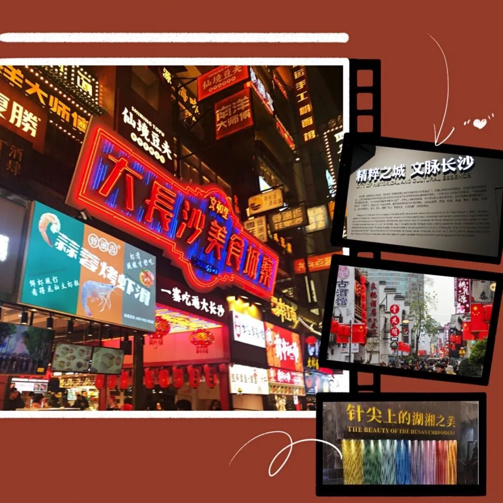
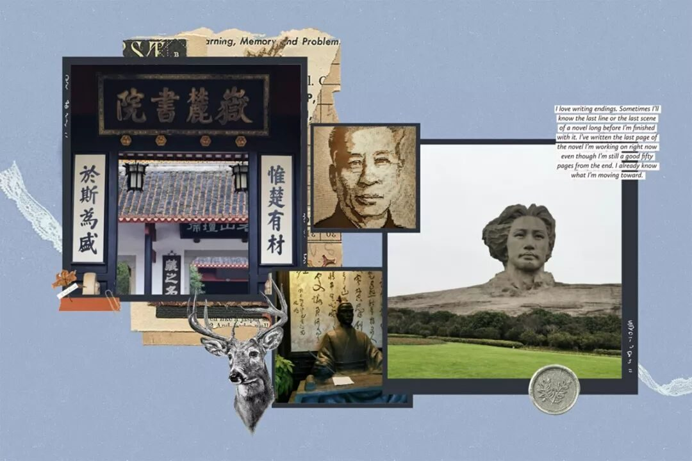
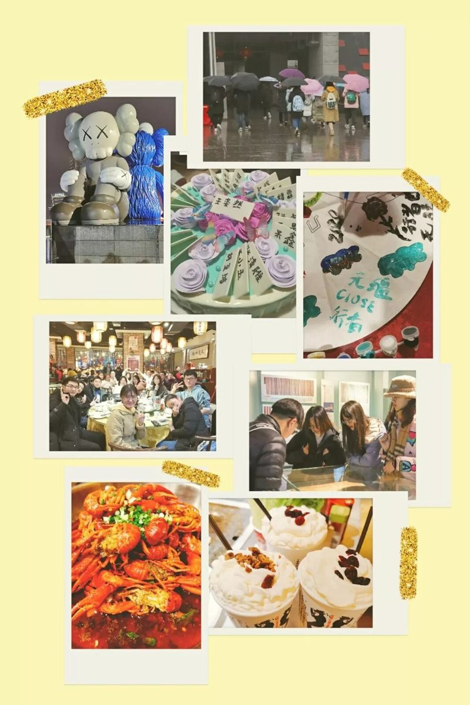

【赋墨沉湘·六】人间有味是清欢


人间有味是清欢
故事该从何说起
从面试中的惴惴不安
从初次见面时的笑容
从团建时的彼此熟络
从火车上的欢声笑语
我们就这样开始了一段文化之旅…

旅行这个词，颇有点神圣的意味。“行”这个字，象征的应该是一条无止境的漫漫长路，仔细想来，行者无疆在我心中的内涵，应该是“壮游”。而作为行者的我们，就在这个过程中与当地的自然、历史、人文深入互动，不断学习，体验不同的生活，感受世界大美，从中获得成长之历练，凝结对文化的深入理解。

行者，我们在路上
走在长沙的大街小巷，各色店铺中珍藏着的美味，有感情有温度的历史文化遗址，无不让我感受到什么是长沙的烟火气，什么是长沙人的风骨，什么是人间有味是清欢。

湖南有三气 ：灵气、匪气、霸气。刚是内核，毅是灵魂，灵是气质。在非遗文化湘绣和剪纸中，湖湘精神的霸蛮和灵泛能辩证统一，虎气与猴气能集于一身。既有“路漫漫其修远兮，吾将上下而求索”的坚忍之志，又有“楚虽三户，亡秦必楚”的豪迈之气。
走访名人故居，不禁让我感叹湖南人的历史就好像一部中国近代史的缩影。从湖湘文化的源头贾谊故居，到愿做人民勤务员的少奇同志，再到始终把人民利益放在第一位的毛主席，都铸就了“惟楚有才，于斯为盛”的历史荣光。而一流人才的出现绝不是偶然的，背后一定有强大的文化在支撑。岳麓书院便为人才的培育提供了沃土，坚持培养学生们的家国情怀，不断加深学生对国家对民族对传统文化的深厚情感，培养他们的责任感，以此作为推动他们进步发展的强大动力。

五天的时间很长，日均2w+的步数，北方人不曾想象的南方阴雨连绵的冬天，直到深夜还在各自忙碌的行者们……五天的时间也很短，短到还没有喝遍茶颜悦色的所有口味，短到我还是会在住的巷子里迷路，短到一次聚餐后我们就面临着分别……
我固执地认为每一场相遇都值得纪念，就算要分离，也会为孤独的生命带来温柔美好的光亮。我仍将走过许多地方，遇见许多人，而与十八个行者们的文化苦旅将会永远成为令我灵魂悸动的瞬间。

卡尔维诺在《看不见的城市里》写道,“人们初次抵达的时候,城市是一种模样;而永远离别的时候,她又是另一种模样...”长沙这座城与行者无疆的你们凝结成了独一无二的味道，永远珍藏于我的记忆！
来源 | 行者无疆实践团
文字 | 吕丰元
排版 | 吕丰元
审核 | 段智然 康艳虎 黄玲
行者无疆实践团
QQ：2758025831

随行者一起认识世界
长按二维码